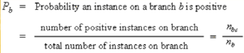
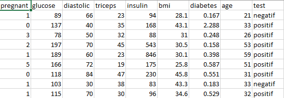

Decision Tree¶
Pengertian Decision Tree¶
Decision tree atau pohon keputusan adalah alat pendukung keputusan yang menggunakan model keputusan yang berbentuk seperti pohon. Decision tree memetakan berbagai alternatif yang mungkin untuk mengatasi suatu masalah, dan terdapat juga faktor-faktor kemungkinan yang dapat mempengaruhi alternatif tersebut beserta estimasi akhirnya jika memilih alternatif yang ada. Decision tree merupakan salah satu metode yang bisa digunakan untuk menampilkan algoritma dimana hanya berisi pernyataan kontrol bersyarat.
Penggunaan Decision tree ini umunya dalam riset operasi, khususnya dalam analisis keputusan. Tujuan dalam menggunakan Decision tree untuk membantu mengidentifikasi strategi yang paling mungkin untuk mencapai tujuan dan merupakan alat yang populer dalam machine learning.
Decision tree merupakan struktur seperti bagan alur dimana setiap simpul internal mewakili kemungkinan yang ada pada atribut, setiap cabang mewakili hasil dari kemungkinan tersebut, dan setiap simpul daun mewakili label kelas (keputusan diambil setelah menghitung semua atribut). Jalur dari root ke daun mewakili aturan klasifikasi.
Struktur Decision tree¶
Decision tree dibentuk dari 3 tipe dari simpul: simpul root, simpul perantara, dan simpul leaf.
- Simpul leaf memuat suatu keputusan akhir atau kelas target untuk suatu pohon keputusan.
- Simpul root adalah titik awal dari suatu decision tree.
- Setiap simpul perantara berhubungan dengan suatu pertanyaan atau pengujian
Algoritma Decision Tree¶
a. Pohon dibangun dalam suatu metoda rekursif topdown divide and-conquer.
Seluruh contoh pelatihan dimulai dari simpul rootjalu dilakukan pengujian
Mencabang ke jalur yang benar berdasarkan hasil pengujian.
Apakah simpul leaf ditemukan? Jika yes, masukkan contoh ini ke kelas target, jika tidak kembali ke langkah 1.
b. Atribut-atribut berada dalam suatu kategori (jika bernilai kontinu, nilai-nilai tersebut didiskritkan terlebih dahulu)
c. Contoh-contoh dipartisi secara rekursif berdasarkan atribut terpilih
d. Atribut-atribut uji dipilih berdasarkan heuristik atau pengukuran Statistik (misai, information gain).
Rumus¶
Rumus pencarian rata-rata entropy


Kelebihan dan Kekurangan Decision Tree¶
Kelebihan:
- Daerah pengambilan keputusan yang sebelumnya kompleks dan sangat global, dapat diubah menjadi lebih simpel dan spesifik.
- Eliminasi perhitungan-perhitungan yang tidak diperlukan, karena ketika menggunakan metode pohon keputusan maka sample diuji hanya berdasarkan kriteria atau kelas tertentu.
- Fleksibel untuk memilih fitur dari internal node yang berbeda, fitur yang terpilih akan membedakan suatu kriteria dibandingkan kriteria yang lain dalam node yang sama. Kefleksibelan metode pohon keputusan ini meningkatkan kualitas keputusan yang dihasilkan jika dibandingkan ketika menggunakan metode penghitungan satu tahap yang lebih konvensional
- Dalam analisis multivariat, dengan kriteria dan kelas yang jumlahnya sangat banyak, seorang penguji biasanya perlu untuk mengestimasikan baik itu distribusi dimensi tinggi ataupun parameter tertentu dari distribusi kelas tersebut. Metode pohon keputusan dapat menghindari munculnya permasalahan ini dengan menggunakan criteria yang jumlahnya lebih sedikit pada setiap node internal tanpa banyak mengurangi kualitas keputusan yang dihasilkan.
Kekurangan:
- Terjadi overlap terutama ketika kelas-kelas dan criteria yang digunakan jumlahnya sangat banyak. Hal tersebut juga dapat menyebabkan meningkatnya waktu pengambilan keputusan dan jumlah memori yang diperlukan.
- Pengakumulasian jumlah eror dari setiap tingkat dalam sebuah pohon keputusan yang besar.
- Kesulitan dalam mendesain pohon keputusan yang optimal.
- Hasil kualitas keputusan yang didapatkan dari metode pohon keputusan sangat tergantung pada bagaimana pohon tersebut didesain.
Studi Kasus (Pima Indians)¶
Pima Indians dengan Metode Algoritma Decision Tree
Persiapan¶
- Python Version: 3.7.1
- Pip Version: 19.1.1
- Spyder Version: 3.3.2
- Data yang digunakan yaitu Pima Indians Dataset yang diperoleh dari Kaggle.com
https://github.com/bayualhaq/Bahan/tree/master/Decision%20Tree%20Pima%20Indians

Berdasarkan Data Pima Indians Dataset dapat diketahui bahwa terdapat 392 data. Dalam data ini terdapat 9 variabel yaitu pregnant, glucose, diastolic, triceps, insulin, bmi, diabetes, age, test.
Selanjutnya, Decision Tree dapat dilakukan dalam phyton seperti berikut.
Langkah-langkah:¶
1. Import Library¶
- Python package yang dibutuhkan dalam pembuatan program ini:
import pandas as pd from sklearn.tree import DecisionTreeClassifier from sklearn.model_selection import train_test_split from sklearn.tree import export_graphviz from sklearn.externals.six import StringIO from IPython.display import Image from sklearn import metrics import pydotplus import numpy as np
2. Import Data CVS ke python¶
memasukkan data csv dari komputer ke python
data = pd.read_csv('PimaIndians.csv')
3. Menampilkan Informasi isi dari CSV¶
menampilkan data
data.head()
output:
pregnant glucose diastolic triceps ... bmi diabetes age test 0 1 89 66 23 ... 28.1 0.167 21 negatif 1 0 137 40 35 ... 43.1 2.288 33 positif 2 3 78 50 32 ... 31.0 0.248 26 positif 3 2 197 70 45 ... 30.5 0.158 53 positif 4 1 189 60 23 ... 30.1 0.398 59 positif
4. Menampilkan Informasi jenis type data tiap kolom¶
data.info()
Output:
<class 'pandas.core.frame.DataFrame'> RangeIndex: 392 entries, 0 to 391 Data columns (total 9 columns): pregnant 392 non-null float64 glucose 392 non-null int64 diastolic 392 non-null int64 triceps 392 non-null int64 insulin 392 non-null int64 bmi 392 non-null float64 diabetes 392 non-null float64 age 392 non-null int64 test 392 non-null object dtypes: float64(3), int64(5), object(1) memory usage: 27.6+ KB
5. Memilih kolom uji untuk dihitung¶
zero_not_accepted =['pregnant','glucose','diastolic','triceps','insulin','bmi','diabetes','age'] # for col in zero_not_accepted: # for i in data[col]: # if i==0: # colSum = sum(data[col]) # meanCol=colSum/len(data[col]) # data[col]=meanCol for col in zero_not_accepted: data[col]= data[col].replace(0,np.NaN) mean = int(data[col].mean(skipna=True)) data[col] = data[col].replace(np.NaN,mean)
6. Membagi data train dan data test dengan data test 30%¶
X = data.iloc[:,0:8] y = data.iloc[:,8] X = data[['pregnant','glucose','diastolic','triceps','insulin','bmi','diabetes','age']] y = data['test'] #split data X_train, X_test, y_train, y_test = train_test_split(X, y, test_size = 0.3, random_state=0)
6. Menentukan Entropy¶
# Create Decision Tree classifer object clf = DecisionTreeClassifier(criterion="entropy", max_depth=3) # Train Decision Tree Classifer clf = clf.fit(X_train,y_train) #Predict the response for test dataset y_pred = clf.predict(X_test) # Model Accuracy, how often is the classifier correct? print("Accuracy:",metrics.accuracy_score(y_test, y_pred))
output:
Accuracy: 0.7711864406779662
Nilai akurasi 77.05%
7. Memvisualisasikan Pohon Keputusan¶
feature_cols = ['pregnant','glucose','diastolic','triceps','insulin','bmi','diabetes','age'] dot_data = StringIO() export_graphviz(clf, out_file=dot_data, filled=True, rounded=True, special_characters=True,feature_names = feature_cols,class_names=['positif','negatif']) graph = pydotplus.graph_from_dot_data(dot_data.getvalue()) graph.write_png('diabetes.png') Image(graph.create_png())
Output: